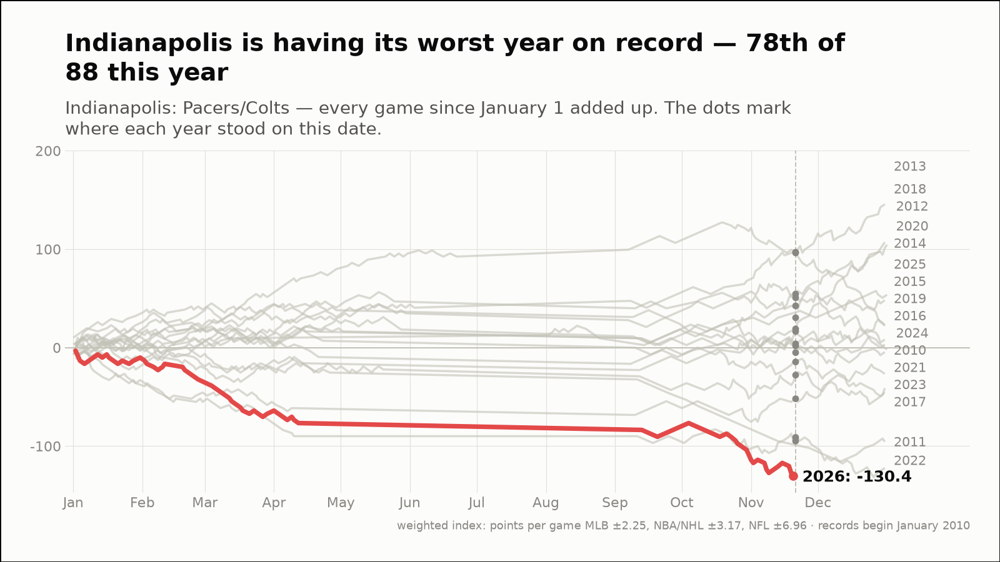
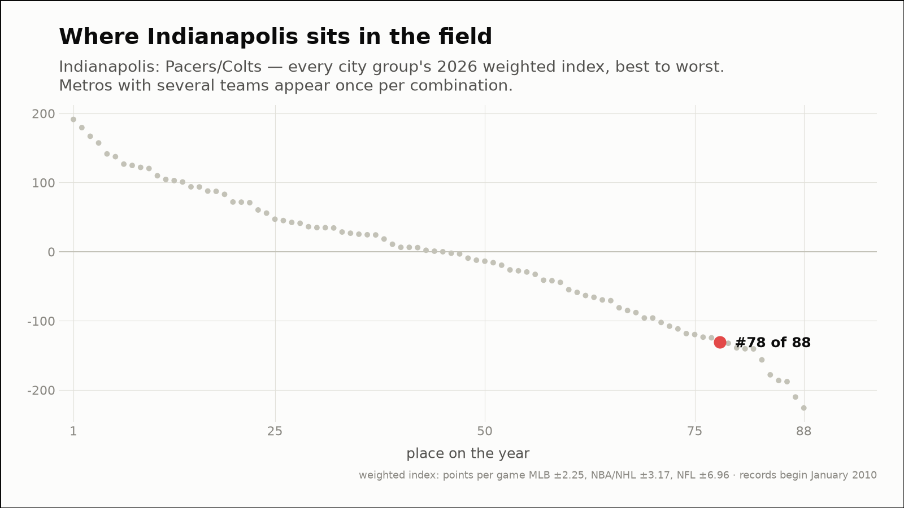

Indianapolis is having its worst year on record — 78th of 88 this year
Indianapolis: Pacers/Colts
- 2026 so far (through November 21)
- 21-55, -130.4 weighted — the worst of the 17 years on record, at the same point
- Against the field
- 78th of 88 city groups on the year (11th percentile)
- This month (through November 21)
- 4-10, -26.6 weighted
- Last 7 days
- 1-4, -9.5 weighted
- Driving it this week
- Pacers (0-3, -9.5)
- Active streaks
- Pacers L3

